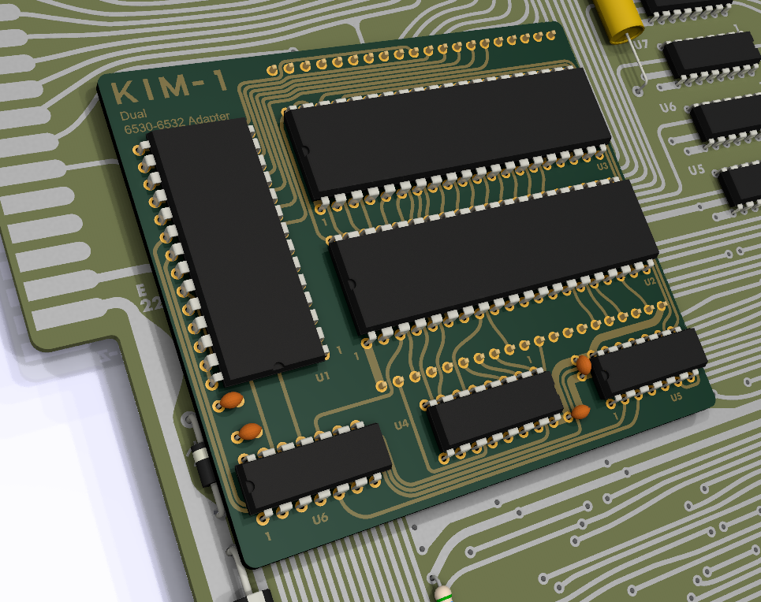
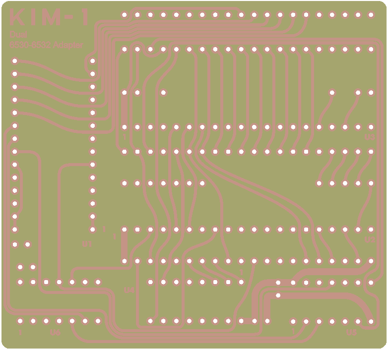

Dieser Adapter ersetzt die beiden 6530 RRIOT ICs mit leichter erhältlichen 6532 RIOT Ics.
Projekt-Homepage • Interakiver Bestückungsplan
 
| Komponente | Anzahl | Preis | Anbieter |
| Platine | 1 | €1.00 | |
| 100nF Kondensator | 4 | €0.12 | Reichelt |
| 1x20 Stiftleiste rund | 4 | €3.72 | Reichelt |
| 6532 RIOT | 2 | €8.94 | AliExpress |
| 74LS00 | 1 | €0.65 | Reichelt |
| 74LS04 | 1 | €0.96 | Reichelt |
| 74LS138 | 1 | €0.86 | Reichelt |
| 14-Pin Sockel, schmal | 2 | €0.50 | Reichelt |
| 16-Pin Sockel, schmal | 1 | €0.21 | Reichelt |
| 40-Pin Sockel, breit | 2 | €1.42 | Reichelt |
| nur Platine | €1.00 | ||
| Bausatz | €18.38 |